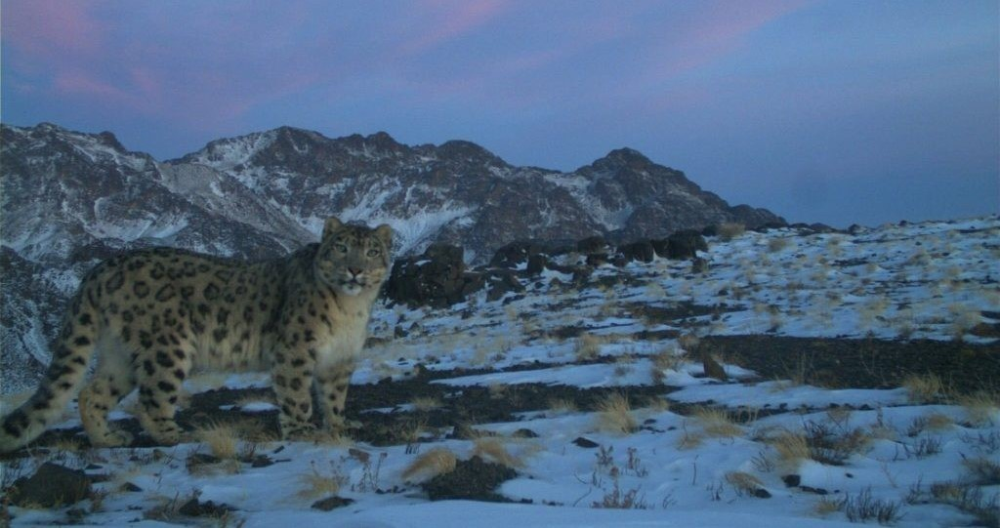

LEOPARDO DAS NEVES
Você provavelmente ja ouviu falar no famoso Leopardo das Neves, um dos animais mais exóticos de todo o planeta, vindo da familia dos felinos é um raro animal que habita em algumas reigões montanhosas da Ásia Central. Mas você sabia que esse lindo felino esta em extisão? Pois acompanhe nosso material para saber tudo sobre a vida deste incrivel animal.
Algumas Características
Com o nome científico de Panthera Uncia, o Leopardo das Neves tem sua coloração variada do cinza claro ao cinza escurecido, com as partes inferiores quase brancas. Todo seu corpo é recoberto por rosetas e manchas escuras, e o pelo é bastante longo, se tornando praticamente invisivel e totalmente adaptado para seu habitat natural que são montanhas cobertas por neve. Apesar de serem grandes predadores possuem uma cabeça pequena comparado ao tamanho do corpo, que pode chegar até 1,30 metro de comprimento e pesarem até 55kg.
A Alimentação
Por ser um animal solitario, caça de forma estrategica, formando emboscadas para suas presas, pois tem a vantagem de se camuflar em seu habitat. Podem predar desde um grande iaque (que pesa mais de 200 kg) até um pequeno veado almiscarado (que pesa somente 10 kg) e até outros predadores como o panda-gigante (em áreas onde conviviam) e a raposa-tibetana. Tal comportamento é compartilhado com o tigre. Podem também predar aves como o faisão ou outros animais, como as marmotas, por exemplo. Trata-se de um animal pouco estudado, devido a seus hábitos reservados, à existência de poucos exemplares, à sua distribuição esparsa e às dificuldades das condições de seu habitat.

Risco de Extinção
Mesmo sendo um animal tão lindo a especie está em extinção devido a grande quantidade de caça clandetina, sendo que o unico predador do Leopardo das Neves é o Homem. O mesmo possui alguns concorrentes na cadeia alimentar, como os lobos (Canis lupus). Apesar de não se encontrarem muito, quando o lobo invade a zona de caça do leopardo as duas espécies entram em conflito; ambos normalmente evitam combate já que o leopardo é o animal dominante. A espécie possui de 4500 a 7500 espécimes na natureza, sendo que foram descoberto mais espécimes nos arredores do Corredor Wakhan, no nordeste afegão;
Então é isso! Espero que você tenha gostado do nosso artigo com essa curiosidade sobre o Leopardo das Neves.